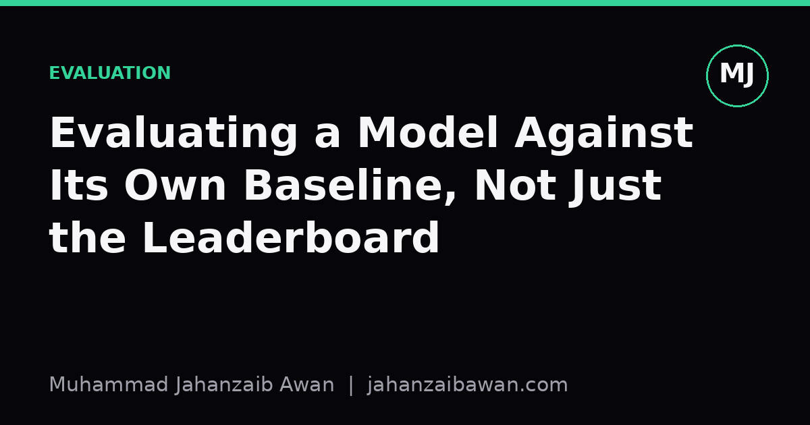

Evaluating a Model Against Its Own Baseline, Not Just the Leaderboard
Everyone compares new models to the state of the art. Almost nobody checks whether the new model actually beats a trivial version of itself, and that omission hides a lot of false progress.

The comparison nobody asks for
When a new model is proposed, the standard ritual is to compare it against other published models on a shared benchmark. Did it beat the previous state of the art by two points? Did it match a larger model with fewer parameters? These are the questions that get asked, because they are the questions that get published. What almost never gets asked is a quieter and arguably more important one: does this model beat a trivial baseline built from its own training data and its own problem structure?
I call this the self-baseline comparison, and it is distinct from comparing against other people's models. A self-baseline is something embarrassingly simple that uses the same inputs, the same labels, and the same evaluation protocol as your fancy model, but with almost none of the sophistication. A constant predictor that always outputs the majority class. A linear regression on the raw features. A nearest-neighbour lookup. A rule that just copies the previous time step forward. If your elaborate architecture cannot clear this low bar by a meaningful margin, the benchmark comparison is almost irrelevant, because you have not demonstrated that your model is doing anything beyond what the data trivially affords.
This matters because benchmark leaderboards are a comparison between methods, not a comparison between a method and the ceiling or floor implied by the data itself. Two models can both beat each other by small margins while both being barely better than guessing based on dataset statistics. Nobody notices because nobody runs the embarrassing baseline. It is not glamorous, it will not get you a publication on its own, and it can be mildly deflating to discover that your three months of architecture tuning gained you one percentage point over a model that took five minutes to write.
A worked example: forecasting that isn't
Suppose you are building a model to forecast tomorrow's demand for a product given the last thirty days of sales. You train a fairly deep sequence model, tune it carefully, and report a mean absolute percentage error of eight percent on a held-out test set. Compared to a recent paper that reports eleven percent on a similar task, this looks like a strong result. You write it up as a three-point improvement.
Now add the self-baseline: a naive forecast that simply predicts tomorrow's demand equals today's demand. No model, no training, just copy the last observed value forward. Run it on the same test set with the same metric. Suppose it scores nine percent. Suddenly the picture changes completely. Your sophisticated model is one point better than doing nothing clever at all. The gap between your model and the naive copy-forward baseline is far smaller than the gap between your model and the competing paper, and it is the gap that actually tells you how much the model has learned about genuine temporal structure versus how much of the apparent accuracy is simply because demand tends to be similar from one day to the next.
This is not a hypothetical embarrassment. Time series problems in particular are notorious for having strong autocorrelation, which means a lazy baseline often performs surprisingly well, and the real contribution of a model should be measured against that floor, not against an arbitrary external number from a different paper on a different dataset with a different train-test split. The external comparison tells you about relative ranking in a leaderboard. The self-baseline tells you about actual signal extraction.
The same logic applies outside forecasting. In a text classification task with imbalanced classes, check your model against a baseline that always predicts the majority class and see what accuracy that achieves on its own. In a recommendation system, check against a baseline that simply recommends the most popular items to everyone. In a regression task, check against predicting the mean of the training target. These baselines cost almost nothing to compute and they anchor your reported numbers to something interpretable rather than to a number plucked from someone else's paper and someone else's split.
Why this comparison gets skipped
Part of the reason this check is skipped is incentive structure. A paper or a project report that says 'we beat the state of the art by two points' sounds like a result. A paper that says 'we beat a naive copy-forward baseline by one point, and the state of the art beats it by three' sounds like an admission of mediocrity, even though it might be the more honest and more useful framing. Reviewers and readers are trained to scan for comparisons against named prior work, not against silent floors, so the incentive to compute and report the self-baseline is weak even when the scientific value is high.
Another reason is that the self-baseline often requires you to think carefully about what 'trivial' means for your specific problem, and that thinking does not transfer easily from one domain to another. The right baseline for a time series is not the right baseline for an image classification task, and the right baseline for a ranking problem is not the right baseline for a regression task. There is no single off-the-shelf baseline you can import, which makes this step feel like extra unglamorous work rather than a checkbox you can tick quickly.
There is also a subtler trap: the self-baseline needs to use the exact same evaluation protocol as the main model, including the same train-test split, the same preprocessing, and the same metric. A sloppy baseline evaluated on a different slice of data, or with a metric computed slightly differently, will give you a false sense of how large your real improvement is. Leakage-aware evaluation matters here just as much as it does for the main model; if your split lets the baseline see information it should not have, the comparison becomes meaningless in the other direction, making your main model look artificially better by comparison.
The practical takeaway
Before reporting any model's performance against an external benchmark, spend the small amount of effort needed to construct and evaluate the most trivial baseline that fits your problem shape, using exactly the same test set and metric. Report both numbers side by side: the gap to the external benchmark, and the gap to the trivial floor. If the gap to the trivial floor is small, that is not necessarily a reason to abandon the work, but it is essential information that changes how the result should be interpreted and communicated.
This habit costs very little and pays off disproportionately. It catches leakage, because a baseline that scores suspiciously well often means the test set is not as hard or as independent as you assumed. It catches overclaiming, because a one-point gain over a trivial method is a different claim from a one-point gain over the previous best method. And it builds a kind of intellectual honesty into your evaluation pipeline that external benchmark chasing alone will never provide. The comparison everyone skips is often the one that tells you the most about what your model has actually learned.